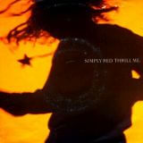
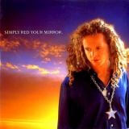
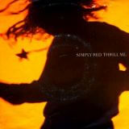
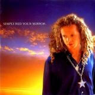

 
  simplyred.es ® is a registered
trademark. All content © 2016-2021 by izugarria.
Todos los contenidos del portal incluyendo, imágenes, vídeo, nombres, marcas y logos, son propiedad de sus respectivos dueños.
Todos los contenidos del portal incluyendo, imágenes, vídeo, nombres, marcas y logos, son propiedad de sus respectivos dueños.